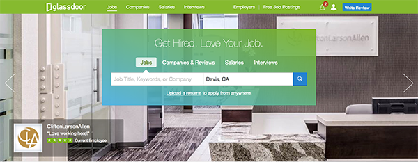

Feb 21 2017
Library of Stuido 5
I used d3.js as the library in my studio 5. I have found a data set about government agencies expenditure in 2011. I have found that there were some changes happened when I calculated the average and total of each agencies. For example, some agencies has very large total but small average amount. If we want to see how the pattern changed, visualization would be a good choice.
In my studio, I have created a interactive donut chart to show the changing of patterns.
Feb 14 2017
Interaction Design of Stuido 4
My connected my studio 4 with three different aspects to make differentinteractive design.
1. JS Event - Mouseover/Mouseout: When mouse move over into specific area, the image source would be changed. In my design, the picture would show up below the context when mouve mouse over. It would disappear when move out.
2. Timeout - I have set the times to slow down the showing time of my pictures. They would delay for few seconds instead of showing immediately.
3. FadeIn - I changed the opacity of the picture when it show up; therefor, i would create a fadein and fade out effect.
Feb 07 2017
Interaction Design of Stuido 3
My connected my studio 3 with three different aspects to make differentinteractive design.
1. JS Event - Mouseover/Mouseout: When mouse move over into specific area, the image source would be changed. In my design, the picture would turn into a colorful image in the same size and position when mouve mouse over. It would change back to a black and white image when move out.
2. JS Event - Double Click: In my studio 3, I set the picture as an "anchor" to show my collections. When double click the image on the page, the source of image would changed and turn the display attributes of original image to hidden.
3. CSS Effect - Transform: I used transform in my studio 3. I rotated the angle of my collections description which would show more interactive of user interface.

Jan 19 2017
Evaluation of Glassdoor's Search Bar
The Glassdoor is a job searching website. The searching bar is on the very top of the homepage
which gives it the highest priority. There are four secitons for different searching areas for users
to choose. Each of them have placeholder in the text enter area to guide user what to enter. Its color
has followed color trend of the entire website. The most important function of a jor searching website
is searching. It's design is quite simple; therefore, I think it maintaince its essential purpose.
Link of the Slideshow

Jan 12 2017
Evaluation of TreeHouse's User Interface
The Treehouse is a online coding website that I usually visit. I learned my web coding package,
HTML/CSS and Javascript, from this website. First, it used a lots of colors to distinguish difference tracks
of the courses which makes the user to get on the right track and take relative courses. Then the font of this
site was a rounded font. It dose not look as formal as Times New Romans, so the users would feel relax when
reading the contents. It also have some animations to make the website full of vim.